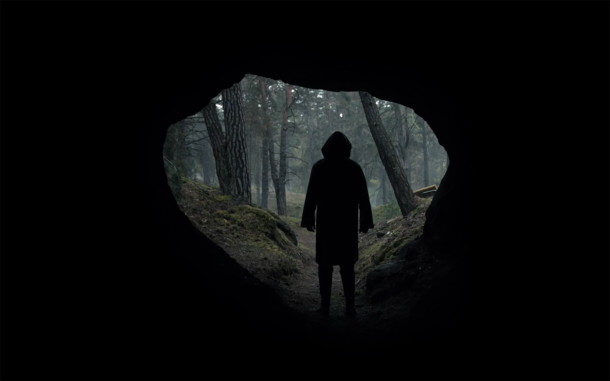
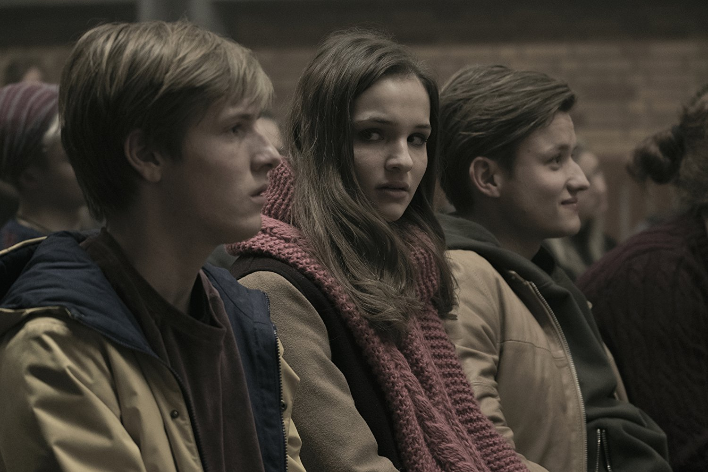
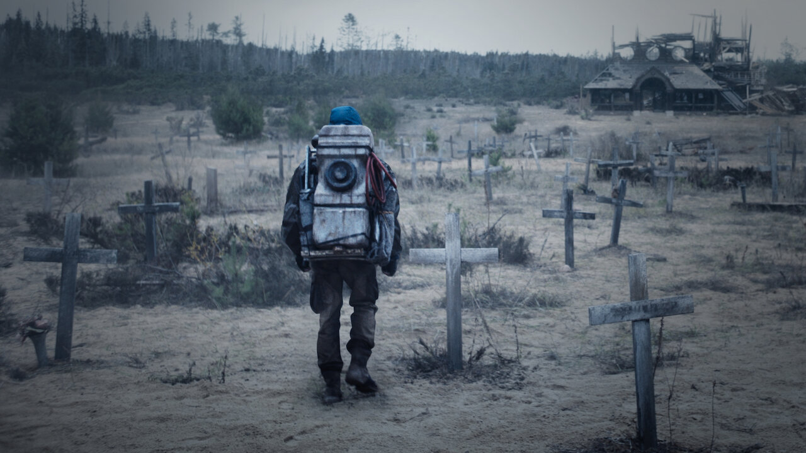
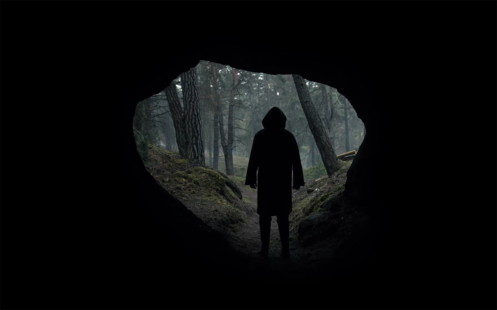
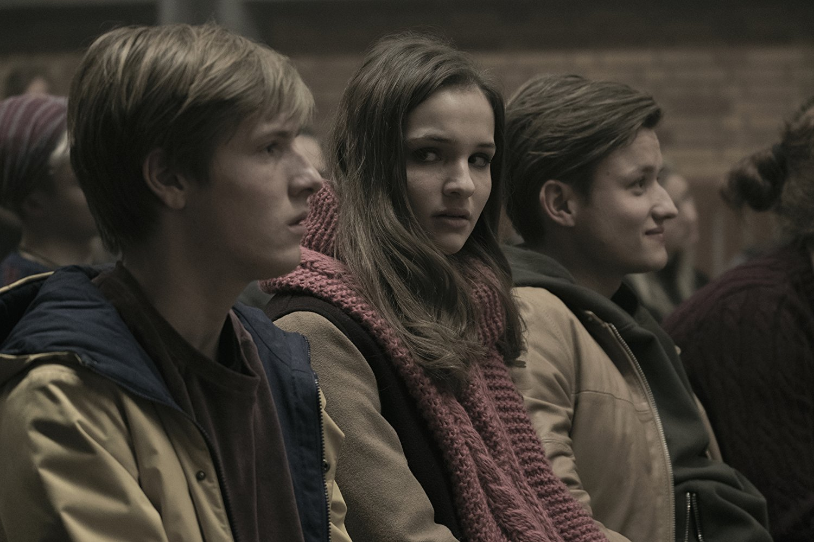
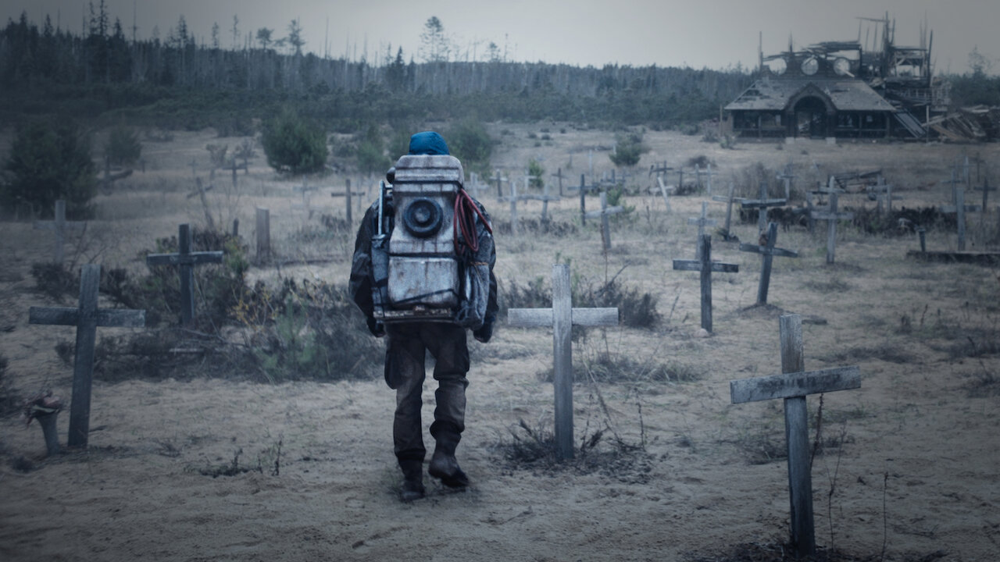

Dark ist eine Deutsches Drama-Science Fiction Serie, geschrieben von Jantje Friese und produziert von Baran bo Odar. Die Serie spielt in der fiktiven Stadt Winden, nach Mikkel Nielsen ist verschwunden, und langsam die Menschen die Dort leben herausfinden, dass sie sind alle verbunden in der gleiche Zeitschleife.